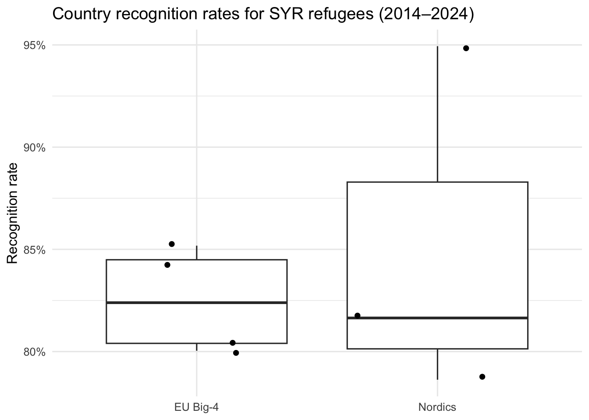
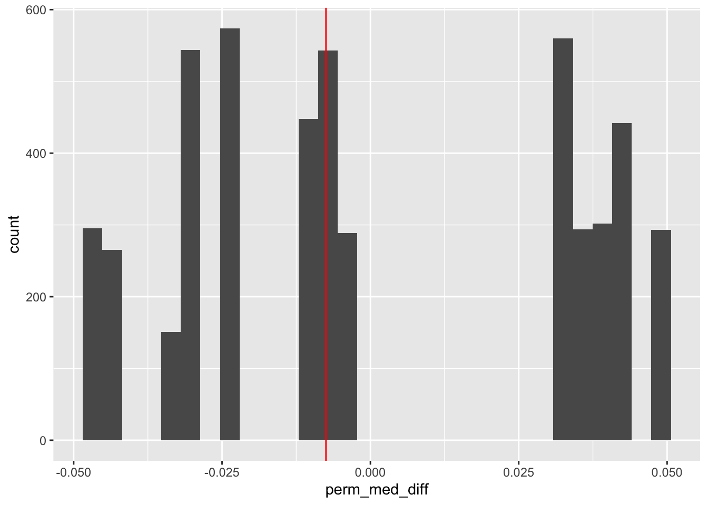

Show code
library(tidyverse)
library(refugees)In this project I test whether country-level recognition rates for Syrian asylum applicants differ between two European blocs: the EU Big-4 (Germany, France, Italy, Spain) and the Nordics (Sweden, Norway, Denmark). I focus on the Syrian refugees, ranging from the 2014-17 refugee crisis, to recent regional conflict, culminating in using data from 2014–2024. I compute each country’s recognition rate compare bloc means/medians, and assess significance with a permutation test.
library(tidyverse)
library(refugees)This code creates a data frame that keeps the relevant EU and Nordic countries that received asylum claims from Syria between the years of 2014 and 2024. It selects the COO ISO code for Syria (“SYR”), the COA ISO codes for the EU and Nordic Blocs respectively, then calculates their recognition rates using rec_total, which summarizes the decision(whether it was through official recognition channels through UNHCR’s mandate or other forms of asylum protection, and n_total, which is the total number of applications received by a given country, and dividing rec_total by n_total. It then outputs a tibble with each asylum country, their rate, and their bloc. It also removes NAs and prevents dividing by 0 during the rate calculations. It also returns an table with the mean and median recognition rates aggregated by bloc.
# focus
origin_sel <- "SYR"
ref_slice <- asylum_decisions|>
select(year, coo_iso, coa_iso, dec_recognized, dec_other, dec_total)|>
filter(coo_iso == origin_sel,
year >= 2014, year <= 2024,
(coa_iso == "DEU" | coa_iso == "FRA" | coa_iso == "ITA" | coa_iso == "ESP" |
coa_iso == "SWE" | coa_iso == "NOR" | coa_iso == "DNK"))|>
group_by(coa_iso)|>
summarise(
rec_total = sum(dec_recognized + dec_other, na.rm = TRUE),
n_total = sum(dec_total, na.rm = TRUE),
rec_rate = if_else(n_total > 0, rec_total / n_total, NA_real_),
)|>
mutate(
bloc = case_when(
(coa_iso == "DEU" | coa_iso == "FRA" | coa_iso == "ITA" | coa_iso == "ESP") ~ "EU Big-4",
(coa_iso == "SWE" | coa_iso == "NOR" | coa_iso == "DNK") ~ "Nordics",
TRUE ~ NA_character_
)
)|>
filter(!is.na(bloc), !is.na(rec_rate))|>
mutate(bloc = factor(bloc, levels = c("EU Big-4","Nordics")))
ref_slice# A tibble: 7 × 5
coa_iso rec_total n_total rec_rate bloc
<chr> <dbl> <dbl> <dbl> <fct>
1 DEU 918795 1147929 0.800 EU Big-4
2 DNK 18343 19321 0.949 Nordics
3 ESP 19225 22570 0.852 EU Big-4
4 FRA 36636 43479 0.843 EU Big-4
5 ITA 4382 5442 0.805 EU Big-4
6 NOR 16831 21407 0.786 Nordics
7 SWE 95822 117367 0.816 Nordics The below code provides the aggregate median and average recognition rates between EU and Nordic countries.
bloc_avgs_unweighted <- ref_slice |>
group_by(bloc) |>
summarise(
mean_rate = mean(rec_rate),
median_rate = median(rec_rate),
n_countries = n(),
.groups = "drop"
)
bloc_avgs_unweighted# A tibble: 2 × 4
bloc mean_rate median_rate n_countries
<fct> <dbl> <dbl> <int>
1 EU Big-4 0.825 0.824 4
2 Nordics 0.851 0.816 3This plot compares country-level recognition rates for Syrian applicants across the EU Big-4 and the Nordics. The central lines (medians) are close, and the boxes/whiskers overlap substantially. Within the Nordics there’s visibly more dispersion, but the EU Big-4 are tighter with lower-variance. Visually, any bloc gap looks small relative to country-to-country variation.
ggplot(ref_slice, aes(x = bloc, y = rec_rate)) +
geom_boxplot() +
geom_jitter() +
labs(
title = "Country recognition rates for SYR refugees (2014–2024)",
x = NULL, y = "Recognition rate"
) +
theme_minimal(base_size = 12)
Based on this data, My research question would be, do the Nordic countries on average and on median have a lower recognition rate than the EU big 4 for Syrian Refugees?
My Null hypothesis would be there is no difference in the average or median recognition rate between Nordic and Big 4 EU countries.
My alternative hypothesis is that EU big 4 countries have a higher median and average recognition rate than Nordic countries.
I used the below function to randomly assign data points to each country in the study. The null hypothesis would assume that the random assignment should produce test statistics similar to the observed statistics!
perm_data <- function(rep, data){
data |>
select(bloc, rec_rate) |>
mutate(rec_rate_perm = sample(rec_rate, replace = FALSE)) |>
group_by(bloc) |>
summarise(obs_ave = mean(rec_rate),
obs_med = median(rec_rate),
perm_ave = mean(rec_rate_perm),
perm_med = median(rec_rate_perm)) |>
summarise(obs_ave_diff = diff(obs_ave),
obs_med_diff = diff(obs_med),
perm_ave_diff = diff(perm_ave),
perm_med_diff = diff(perm_med),
rep = rep)
}I will generate 500 simulated null data sets to show the distribution of permuted mean and median differences on a histogram. A red line will show the observed mean and median differences in the original data set.
set.seed(47)
perm_stats <- map(c(1:5000), perm_data, data = ref_slice) |>
list_rbind()
perm_stats |>
ggplot(aes(x = perm_ave_diff)) +
geom_histogram() +
geom_vline(aes(xintercept = obs_ave_diff), color = "red")
perm_stats |>
ggplot(aes(x = perm_med_diff)) +
geom_histogram() +
geom_vline(aes(xintercept = obs_med_diff), color = "red")
Due to the red line’s proximity to the center of the distribution in both, it seems the data has failed to reject the null hypothesis. This means it is likely there is not a significant difference between the observed values and the expected difference To verify there is no real difference, the below data will provide the P-value.
perm_stats |>
summarize(p_val_ave = mean(perm_ave_diff > obs_ave_diff),
p_val_med = mean(perm_med_diff > obs_med_diff))# A tibble: 1 × 2
p_val_ave p_val_med
<dbl> <dbl>
1 0.350 0.436Across 2014–2024, we fail to reject the null hypothesis. the EU Big-4 and Nordics do not exhibit a statistically detectable difference in country-level recognition rates for Syrian applicants when comparing bloc means/medians. The P-value signifies the likelihood that an observed result is due to random chance. Below, we see a P value for the average recognition rate of 34%, and for the median it is 43%. This means that there is a respective chance of 34% or 43% that the observed result is due to a random occurrence, and thus not enough to reject the null hypothesis
Sources:
UNHCR refugees R package — overview & install guide:
https://www.unhcr.org/refugee-statistics/insights/explainers/refugees-r-package.html